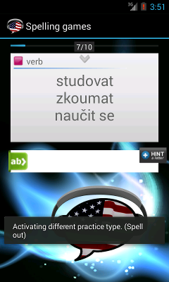

Napište slovo přesně písmeno po písmenu.
Hláskování je nejtěžší cvičení pro procvičování psaní slovíček. K dispozici nemáte žádné pomocné pomlčky, takže nevíte kolik písmen slovíčko obsahuje. Navíc musíte napsat písmena ve správném pořadí a správně slovo postupně vyhláskovat.
Pokud si nemůžete vzpomenout na překlad slovíčka, použijte výslovnost. V případě potřeby použijte tlačítko Hint, které za Vás uhádne správné písmeno.
Posunutím kartičky doprava se přesunete na další kartičku (pouze po plném dokončení původní kartičky).
Toto je jedno ze tří cvičení pro spelling. Kliknutím na ikonu vedle textu si můžete během cvičení přepínat mezi různými typy obtížnosti cvičení Hangman (Šibenice), Spell out (Hláskování) - tato stránka - a Spell Random.